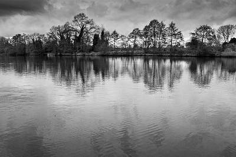
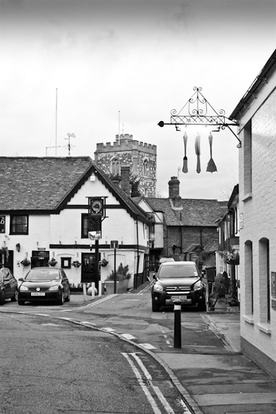
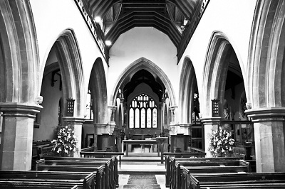
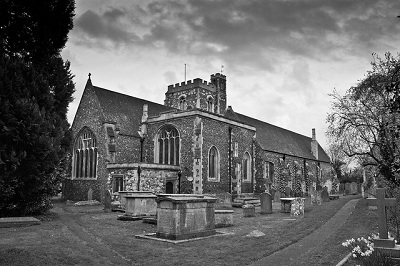

Social documentary photography or concerned photography is the recording of how the world looks like, with a social and/or environmental focus. It is a form of documentary photography, with the aim to draw the public's attention to ongoing social issues. It may also refer to a socially critical genre of photography dedicated to showing the life of underprivileged or disadvantaged people.

The first thing you need to do, before even thinking about picking up a camera, is to get to grips with the subject matter that you’re going to be shooting. This will not only help you to anticipate what to expect while shooting, but will also prepare you in understanding how to represent the subject matter involved. Ensure that you all the equipment required for the shoot, think particularly about whether you need to travel light in order to be mobile.
Once you’ve got your research done, it’s time to begin thinking about how to shoot the subject matter and I always find it useful to get some inspiration from some of the greats of documentary photography such as Robert Capa, Martin Parr, James Nachtwey and Don McCullin.Observing work such as this will encourage and train your photographic eye to be vigilant and to see the extra depth within a scene in order to capture the moments that define your story.

The final piece of preparation before shooting, is to consider how you want to capture your subject matter. Think about why you originally wanted to work with the topic, what inspired you? How do you view the subject matter? How would someone else in a different position view the subject matter?Make a few decisions about how you want to represent the subject prior to the shoot. This will get you started, but remember, you are documenting something. The word "document" implies a certain about of truth and objectivity. Therefore if a situation is not what you expected, you should not try to represent it as your preconceived notion.

Working as a documentary photographer comes with a certain amount of responsibility. It’s up to you to make decisions as you shoot with regard to what is appearing before you and how you portray that scene.The audience is relying on you to accurately portray the truth of what is happening, so when composing a shot, you need to remember that sometimes what you leave out is just as important as what you put in the shot.It can be very difficult to work objectively. In fact, some would argue that it’s impossible as we all approach life with certain perspectives and preconditioned mindsets. However, it’s important that you work as objectively as possible, establishing a truthful account of the subject without prejudice or political slant.

When shooting, it’s essential to capture a variety of shots in order to give your audience a balanced perspective of the subject. Imagine that someone is walking around a market, they wouldn’t spend the duration of the time with their faces as close to the artifacts on sale as possible, and so in a similar way, you wouldn’t want to simply have a photo essay filled with macro shots, because the shots wouldn’t have any context.Ensure that you take some wider angle establishing shots, and maybe take some time away from the action to view the scene from a different perspective. This will help set the scene for the viewer and allow them to put the rest of the shots into perspective.
Alongside the wide angle shots, it’s essential to pick out interesting details that may have otherwise been missed by a casual viewer. Textures, colors and patterns all make for eye catching close ups. Be vigilant and keep your eye out for opportunities to supplement your story. It’s also important to capture the faces of any people involved.This can require a lot of confidence on the part of the photographer, but approaching people and asking if you can take their photo really isn’t as scary as you might think. An audience will engage with faces, the reactions and expressions of those involved are a great way to aid telling the story of the subject.
If your subject matter is focused upon people, then you have two options based upon your approach. it may be that you don’t want anyone to know you are there, you want to blend into the background and shoot entirely natural shots. The other option is to interact with your subjects, in which case, it’s important that you build a rapport with them.Introduce yourself and have conversations, this will break down any barriers and ensure that the subjects are comfortable with having a photographer around. It will make for far more natural shots as everyone will be happier and at ease.
Documenting a subject can be a painstaking process. There can be a lot of waiting or even shoots that require multiple visits in order to get the shots you want. If this is the case, it’s important to be patient and not to get frustrated that the timescale is longer than you’d imagined.Waiting for just that extra few minutes, hours or days can really make the difference. If you are finding it hard to get the shots you want, then maybe you need to re-assess your outlook, maybe you’ve set yourself a challenge that is impossible to meet. Don't be afraid to shift focus for a while to give yourself time to establish your approach.
Restrictions aren’t anyone’s idea of fun, but it’s important that within this context that you play by the rules and don’t push the limits of what you are and aren’t allowed to shoot.Some areas have photographic restrictions placed upon them, so don’t shoot where you’re not allowed and if asked to refrain from taking photos, please do so politely. If required, ensure you get permission to shoot in certain areas. Similarly, some people do not wish to have their photo taken or for a stranger to take photos of their children, so please respect their requests.
Documentary photography is all about representing reality. Many photographers are now guilty of shooting quickly, hoping for the best and relying on post production to save their shots. With documentary photography, you cannot hide behind the post production.It’s essential to retain the reality and truth within the shot. Therefore, it’s important to get it right in camera. Know your settings and take your time with the composition to ensure you’re getting the shots you want and need.